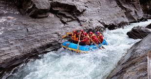
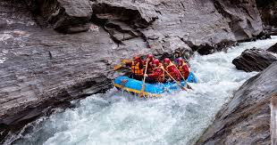

It's Time to Do it!

 

Purpose
Our white water rafting site is dedicated to providing adventure enthusiasts with an unforgettable experience navigating through some of the most exciting rapids. Whether you're a seasoned rafter or a first-timer, our aim is to offer a safe, thrilling, and fun-filled adventure that brings people closer to nature and each other.
Offerings
- Guided Rafting Tours:Our professional and experienced guides will lead you through various levels of rapids, ensuring safety and maximizing fun.
- Safety Equipment:We provide top-of-the-line safety gear, including helmets, life jackets, and paddles, to ensure all participants are well-protected throughout their journey.
- Group Packages:We offer special packages for groups, including family outings, corporate team-building events, and school trips.
- Training SessionsNew to rafting? Join our training sessions to learn the basics of white water rafting, safety protocols, and paddling techniques before hitting the rapids.